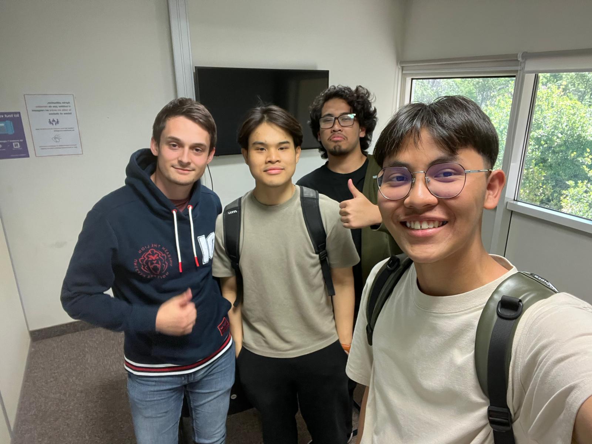

Projet 2 : Interview professionnelle
Objectif
L’objectif était de découvrir les missions réalisées en entreprise, les outils utilisés, les compétences nécessaires et le lien entre les enseignements du BUT R&T et les situations réelles de travail.
Contexte du projet
Dans le cadre de ma formation, j’ai réalisé une interview avec une personne effectuant un stage afin de mieux comprendre l’application concrète des Réseaux et Télécommunications dans le monde professionnel.
Travail réalisé
J’ai préparé une liste de questions portant sur le parcours de la personne interviewée, son stage, ses missions, ses difficultés et les compétences techniques ou humaines utilisées au quotidien. Après l’entretien, j’ai analysé les réponses afin de mieux comprendre les attentes du monde professionnel.
Difficultés rencontrées
La principale difficulté était de formuler des questions suffisamment précises pour obtenir des réponses utiles. Il fallait aussi rester attentif pendant l’échange afin de pouvoir relancer la discussion de manière naturelle.
Ce que j’ai appris
Ce projet m’a permis de voir que les compétences étudiées en cours, comme les réseaux, l’organisation du travail et la communication, sont réellement utilisées en entreprise. J’ai aussi compris l’importance de savoir expliquer clairement son travail et de poser des questions pertinentes.
Compétences développées
Communication professionnelle, préparation d’un entretien, écoute active, analyse d’expérience, curiosité professionnelle et compréhension du monde du travail.
Preuves du projet
Comme preuve, je présente une image liée à l’interview réalisée dans le cadre du projet.
